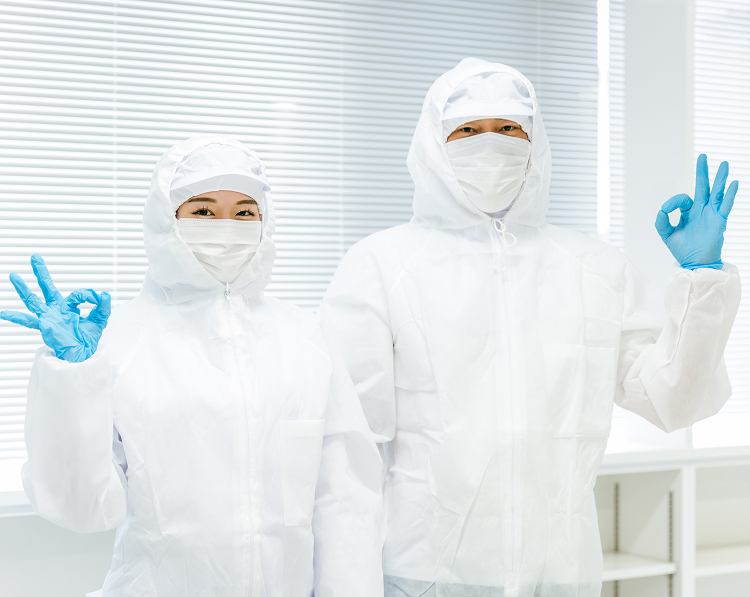

지속가능경영
지속가능경영
HOME > 지속가능경영 > 안전보건경영
안전보건경영SAFETY & HEALTH

모두가 안전한 일터, 함께하는 신풍제약
생명 존중의 가치를 현장에서 실현합니다
신풍제약은 안전과 보건을 기업경영의 최우선 가치로 삼고, 안전보건관리체계를 기반으로 안전하고 쾌적한 근로환경을 조성합니다. 관련 법규와 기준을 준수하며 안전보건 목표와 실행계획을 수립하고, 충분한 인적·물적 자원을 바탕으로 위험요인을 지속적으로 파악·제거·개선합니다. 또한 임직원의 적극적인 참여와 교육·훈련을 통해 안전보건 의식을 높이고, 공급자와 계약자를 포함한 모든 구성원이 안전보건에 대한 책임과 의무를 성실히 이행하도록 하여 건강하고 안전한 일터를 만들어갑니다.
안전보건경영 중장기 목표
-
- 안전보건시스템 구축·운영
- 2026년까지 국내 법규 준수를 위한 전담조직을 구축하고, 2030년까지 원·하청 간 안전보건 수준의 격차를 해소합니다.
-
- 임직원 안전의식 확립
- 2026년까지 안전보건교육을 내실화하고, 2030년까지 모든 근로자의 안전의식을 높여 안전한 근무환경을 조성합니다.
-
- 안전보건관리 실행력 강화
- 2026년까지 근로자 참여형 위험성평가를 강화하고, 2050년까지 위험요인을 지속적으로 개선하여 사고 발생 제로화를 추진합니다.
안전보건 활동
-
- 안전
- 산업안전 보건교육 실시(관리감독자 교육 및 전파교육, 외부 교육)
- 근로자 참여 위험성 평가 실시
- 무재해 활동 실시
- 산업안전보건위원회 활동
- 밀폐공간 프로그램 모니터링 실시
- 작업장 순회점검 활동
- 신규채용자 교육 및 특별안전보건교육 실시
-
- 보건
- 작업환경 측정
- 일반 및 특수 건강검진 실시
- 근골격계 유해요인 조사 실시
- 건강검진 사후 관리 진행
-
- PSM
- PSM 위험성 평가 재평가 실시(HAZOP 재실시)
- PSM 변경관리 실시
- 반응기 등 설비등급 평가 실시
- PSM 자체감사활동 실시
-
- 훈련
- 소방 훈련
- 비상대응 및 대피 훈련
- 반응기 등 설비등급 평가 실시
- 밀폐공간 구조 훈련